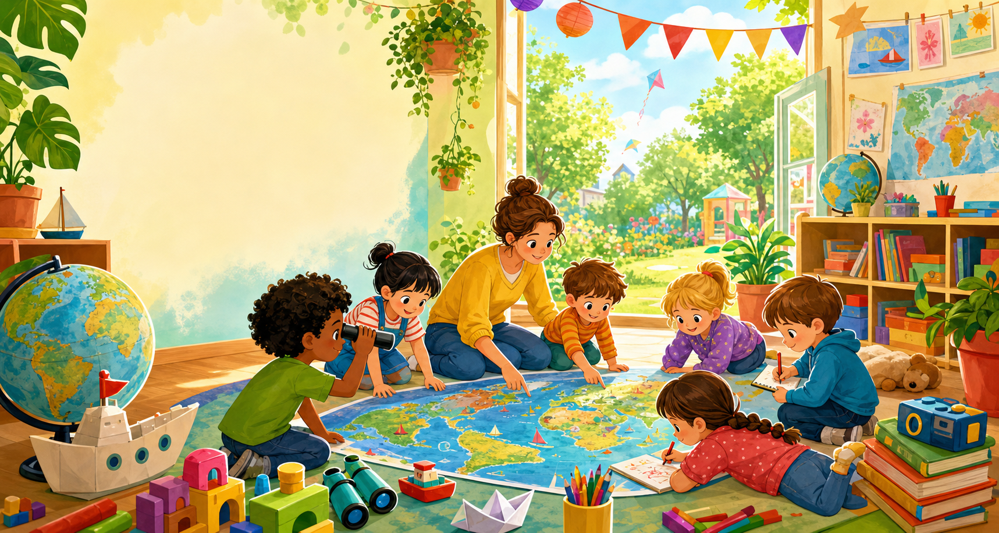
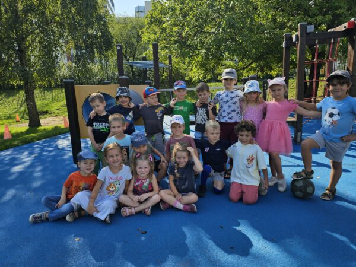
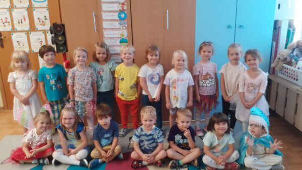
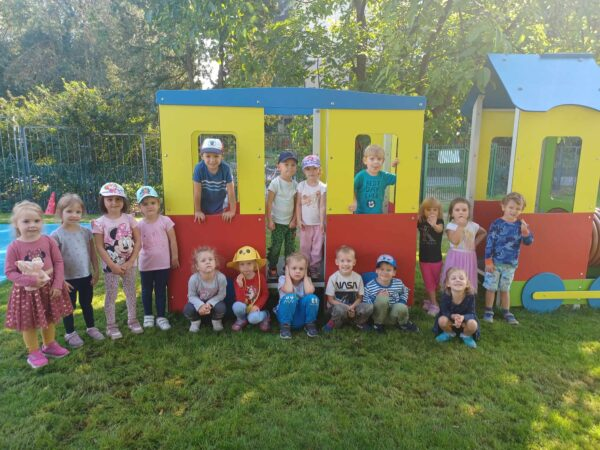

Ursynów · Jana Cybisa 1 · 7:00-17:30
Małe odkrycia na mapie Ursynowa
Przedszkole nr 55 im. Polskich Podróżników to kolorowa baza wypraw dla dzieci z Ursynowa: blisko domu, z własnym ogrodem, spokojnym rytmem i codziennym odkrywaniem świata przez zabawę.
- duży ogród i ruch
- własna kuchnia
- 8 sal dydaktycznych
- opieka specjalistów
Motyw podróży prowadzi przez nazwy grup, edukację i oprawę strony, ale centrum nadal stanowi prosta informacja dla rodziców.
Dla rodziców
Najczęściej potrzebne informacje
Aktualności
Komunikaty dla rodziców
Zapraszamy na dni otwarte
Okazja, by poznać przedszkole, nauczycieli i zapytać o adaptację dziecka.
Adaptacja najmłodszych
Zajęcia adaptacyjne pomagają dzieciom oswoić nowe miejsce i poznać opiekunów.
Wyprawka na nowy rok
Najważniejsze rzeczy do przygotowania przed rozpoczęciem przedszkola.
O przedszkolu
Kolorowo, blisko, spokojnie
Budynek przedszkola stoi w środku osiedla, z dala od wzmożonego ruchu. Dzieci mają do dyspozycji sale dydaktyczne, salę gimnastyczną, ogród, stołówkę oraz gabinet psychologiczno-logopedyczny.
Duży ogród
Oddzielne przestrzenie dla młodszych i starszych dzieci, zabawa i ruch na powietrzu.
Muzyka i rytm
Rytmika, piosenki, instrumenty i aktywności, które budują ekspresję.
Podróżniczy patron
Motyw odkrywania świata jest obecny w nazwach grup i codziennych aktywnościach.
Własna kuchnia
Posiłki przygotowywane na miejscu, z uwzględnieniem diet i alergii.
Grupy
Na mapie przedszkola każda grupa ma swoją trasę
Plan dnia
Stały rytm, dużo ruchu i czas na odpoczynek
Schodzenie się dzieci, zabawy swobodne i praca indywidualna.
Śniadanie i przygotowanie do zajęć.
Zajęcia dydaktyczno-wychowawcze w grupie.
Ogród, spacery, aktywność ruchowa i samoobsługa.
Obiad.
Odpoczynek młodszych grup lub zajęcia rozwijające starszych.
Zabawy, edukacja i pobyt na powietrzu do odbioru dzieci.
Pierwsze dni
Dla nowych rodziców
Najważniejsze tematy zebrane w jednym miejscu, żeby start w przedszkolu był spokojniejszy.
Adaptacja
Warto stopniowo oswajać dziecko z nowym rytmem dnia, salą i nauczycielami.
Wyprawka
Ubrania na zmianę, obuwie, podpisane rzeczy osobiste i wygodny strój do zabawy.
Kontakt
W sprawach organizacyjnych najlepiej kontaktować się z sekretariatem lub wychowawcą grupy.
Zajęcia
Więcej okazji do próbowania
Język angielski
Oswajanie języka przez zabawę i codzienne sytuacje.
Rytmika
Ruch, piosenki i instrumenty w naturalnym rytmie dziecka.
Sport
Ćwiczenia wspierające sprawność, koordynację i odwagę.
Kodowanie
Logiczne myślenie, sekwencje i zabawy z zadaniami.
Religia
Organizowana zgodnie z decyzją rodziców.
Zajęcia płatne
Taniec oraz Early Stage po godzinach pracy przedszkola.
Żywienie
Własna kuchnia i codzienne posiłki
Posiłki przygotowywane są na miejscu. Przy planowaniu menu uwzględniane są alergie pokarmowe i specjalistyczne diety na podstawie zaświadczeń lekarskich.
Rekrutacja
Najważniejsze daty 2026/2027
Deklaracje kontynuowania wychowania przedszkolnego.
Wypełnianie i wysyłanie wniosków w systemie.
Lista dzieci zakwalifikowanych i niezakwalifikowanych.
Lista dzieci przyjętych i nieprzyjętych.
Przestrzeń
Ursynów, ogród i codzienne wyprawy



Kontakt i dojazd
ul. Jana Cybisa 1, Warszawa
Przedszkole nr 55 im. Polskich Podróżników02-784 Warszawa
- Telefon
- (22) 259 40 41, (22) 259 40 42
- p55@eduwarszawa.pl
- Dyrektor przyjmuje
- wtorek 8:00-10:00, czwartek 16:00-17:00